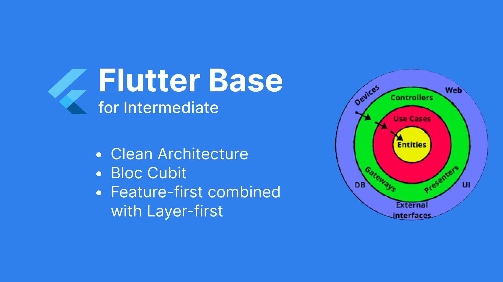

Triển khai Base Flutter - Phần 2: Kiến trúc tổng thể
I. Giải quyết bài toán kiến trúc tổng thể
Tiếp nối sau phần bối cảnh, giờ chúng ta đi vào chi tiết hơn trong quá trình xây dựng base Flutter.
Đầu tiên là giải quyết 2 câu hỏi quan trọng nhất:
- Triển khai base Flutter theo kiến trúc nào, cách tổ chức code ra sao?
- Cách quản lý state ra sao?
Các bạn liệu có thắc mắc tại sao mình lại cho rằng đây là 2 vấn đề quan trọng hàng đầu mà cần phải tìm hiểu và phải giải quyết được đầu tiên không? Ở công ty mình, có rất nhiều dự án mobile app cùng chạy, việc anh em hỗ trợ chéo lẫn nhau trong các dự án là điều thường thấy, các thành viên đều chưa ai biết tới Flutter,... Cho nên việc quyết định được kiến trúc tổng thể là điều vô cùng quan trọng. Từ đó anh em sẽ có tầm nhìn và mục tiêu chung, có thể hỗ trợ nhau tốt nhất có thể. Các dự án có kiến trúc tốt cũng sẽ dễ dàng bảo trì, sửa chữa hơn.
Không lan man thêm nữa, chúng ta đi vào chi tiết vào câu trả lời cho 2 câu hỏi trên:
- Kiến trúc: đó chính là Clean Architecture, tổ chức code theo Layer-first kết hợp với Feature-first
- Quản lý State: sử dụng Bloc Cubit
1. Kiến trúc theo Clean Architecture
Lại là cái tên Clean Architecture, một cái tên quen thuộc mà rất nhiều người trong ngành CNTT đã nghe thấy. Đi cùng với nó là hàng tá các lời bàn tán: nào là cồng kềnh, phức tạp, có thể không cần thiết lắm, mỗi người áp dụng 1 kiểu,... Nhưng chắc hẳn những người đã nghe tới những lời bàn tán đó thì đều không thể phủ nhận những ưu điểm vượt trội mà nó mang lại cho chúng ta: dễ dàng maintain, mở rộng, chia để trị các tầng vô cùng hiệu quả, dễ dàng unit test,..
2. Quản lý state với Bloc Cubit
Vấn đề về quản lý state có vô vàn các phương án, mình lựa chọn bloc và triển khai bloc pattern từ những ngày đầu tìm hiểu. Lý do cho sự lựa chọn này là vì ngày đó khi tìm hiểu mình thấy bloc làm rất tốt trong việc tách biệt giữa business logic và ui. Đó cũng là việc mà khi mình làm trên nền tảng native mình vô cùng chú trọng tới.
3. Kết hợp giữa Feature-first với Layer-first để tối ưu trong việc tổ chức code
Và khi triển khai chúng, để tổ chức mã nguồn mình kết hợp giữa Layer first và Feature first ???

Ủa là sao? Tại sao là kết hợp cả feature-first với layer-first vậy?
Nếu tổ chức theo feature-first: thật dễ để quản lý từng tính năng cụ thể, nhưng cũng chính vì thế màn trông việc tổ chức code có phần bị phân mảnh theo từng feature. Như bạn thấy hình bên trái, nếu trong các feature có cùng logic xử lý thì điều gì sẽ xảy ra. Mà các ứng dụng chúng ta thường làm, các tính năng nhiều khi móc nối với nhau rất nhiều, đâu có phân tách hoàn hảo để có thể tổ chức theo cách như vậy.
Còn với cách tổ chức theo layer-first: đây là cách tiếp cận mà chúng ta có thể quản lý theo từng tầng cụ thể, các tầng đảm nhiệm những nhiệm vụ riêng biệt mà từ đó có thể tận dụng lại mã nguồn tốt nhất có thể. Nhưng nhìn vào hình bên phải, và tình huống thực tế khi chúng ta phải maintain 1 tính năng. Thật là ám ảnh khi phải kéo lên kéo xuống từng tầng để có thể đọc các file tương ứng.
Như vậy, giải pháp kết hợp cả 2 lại vô hình chung lại là 1 phương án rất đáng suy ngẫm. Mình sử dụng layer-first cho việc tổ chức tầng dữ liệu và business logic, còn feature-first thì mình dùng để quản lý mã nguồn với từng tính năng cụ thể dành cho tầng hiển thị.
II. Cấu trúc dự án

Tất tần tật những gì chúng ta có thể thấy trong việc triển khai Clean Architecture đều được cô đọng lại trong hình vẽ trên.
Nhìn vào chúng ta có thể thấy rõ được có 3 layer quan trọng nhất:
- Presentation: chứa UI và Bloc (Đây chính là tầng mà chúng ta sẽ triển khai theo Feature first). Đảm nhiệm vai trò hiển thị và tương tác với người dùng
- Domain: chứa Use Cases, Entities và Interface Repositories. Đảm nhiệm vai trò xử lý các business logic
- Data: chứa Impl Repositories, Models và Data source (local & remote). Đảm nhiệm vai trò quản lý dữ liệu cho ứng dụng
Tương ứng với các layer chính là các folder mà chúng ta sẽ quản lý. Ngoài ra mình có tạo thêm folder utils là nơi mình triển khai các base module nhỏ/ các utils tiện lợi sử dụng)
Và khi kết hợp lại chúng ta có cách tổ chức code như sau: